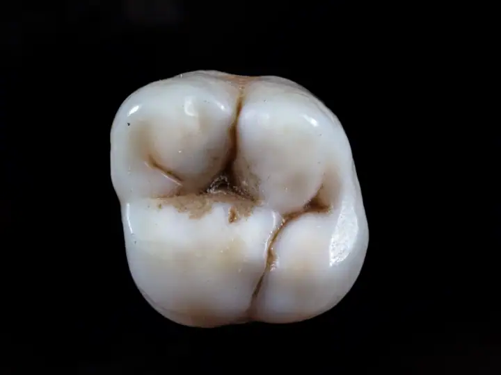
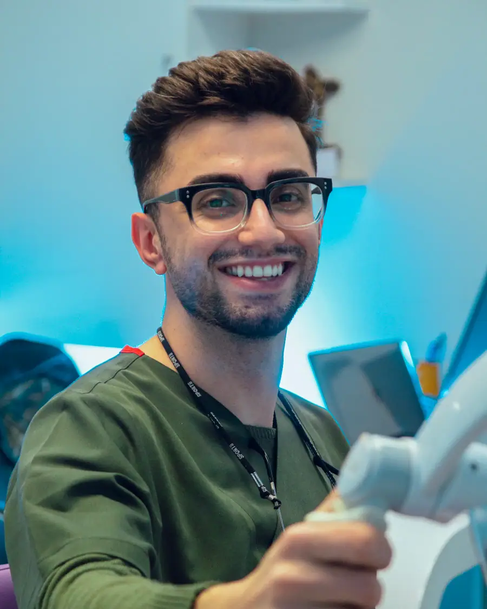

01
Avaliação e clínico geral
Consulta completa, limpeza, restaurações e prevenção. É por aqui que todo tratamento bem-feito começa.
Agendar avaliaçãoDentista 24 horas no Taquaral · Campinas
Urgência odontológica 24 horas, todos os dias: canal, extração de siso, restaurações e próteses com um dentista que explica tudo e acompanha você até a dor passar. Nota 4,8 com 92 avaliações no Google.
Atende 24 horas
Escolha o tratamento e fale direto com a equipe do consultório do Dr. Villela. A mensagem já vai pronta no WhatsApp.
Consulta completa, limpeza, restaurações e prevenção. É por aqui que todo tratamento bem-feito começa.
Agendar avaliação
Endodontia para salvar o dente e acabar com a dor, com anestesia e acompanhamento em cada sessão.
Agendar avaliação
Extrações simples e cirurgia de siso com planejamento pelo raio-X e orientação completa para a recuperação.
Agendar avaliação
Restaurações da cor do dente para tratar cáries e desgastes sem que ninguém perceba.
Agendar avaliação
Próteses fixas e removíveis para recuperar a mastigação, a fala e a confiança no sorriso.
Agendar avaliação
Atendimento para crianças com paciência e carinho, para criar desde cedo uma boa relação com o dentista.
Agendar avaliação
Sábado à noite, domingo de manhã, três da madrugada: o Dr. José Luiz Villela atende emergências odontológicas em Campinas e ainda acompanha o pós pelo WhatsApp, tirando cada dúvida.
Sem complicação: você conversa, entende o seu caso e só então decide.
Conte o que está sentindo ou o que quer melhorar no sorriso. A equipe responde e encontra o melhor horário para você.
O dentista examina, conversa com você e explica as opções de tratamento, com o plano e as etapas por escrito.
Você decide com calma e é acompanhado em cada sessão, até o resultado final.
Segunda a domingo: 24 horas
Depoimentos reais de pacientes publicados no Google Maps.
“Acordei com muita dor hj e boca bem inchada, entrei em contato para um atendimento de emergência e de fato fui atendida na hora. Atendimento excepcional no consultório do Dr. Zé Luiz!”
“Um atendimento muito bom, humanizado, desde o início ao fim! Eu estava muito nervosa no início e o Dr. Sempre me acalmando conversando comigo, me explicou todo o procedimento, deu todas a orientações várias vezes.”
“Precisamos de atendimento cirúrgico de siso de urgência. Encontrei na web, liguei e prontamente fomos atendidos. Em 2 horas fomos atendidos e a cirurgia realizada. Claro, atendimento cirúrgico de urgência não é tão barato, mas quem sente dor de dente sabe como é.”
“Doutor Villela gostaria de expressar minha mais sincera admiração pelo profissionalismo exemplar que você demonstra em seu trabalho .Obrigada pela dedicação , carinho e principalmente paciência com o meu filho Michel de 8 anos que hoje pode sorrir sem dor 🥰”
“Fui atendida pelo Dr. Villela neste domingo, até então não tinha tido uma experiência muito boa com dentistas, mas ele foi muito atencioso, e a experiência dessa vez foi bem melhor. Começarei a tratar meus dentes agora com ele.”
Não achou sua dúvida? Pergunte direto para a equipe no WhatsApp.
O consultório do Dr. Villela fica na Av. Nossa Sra. de Fátima, 1271 (em frente ao Dalben Taquaral), Taquaral, em Campinas (SP), CEP 13076-000. Pelo botão "Traçar rota" nesta página você abre o caminho direto no Google Maps.
A clínica atende segunda a domingo, 24 horas. O agendamento é feito pelo WhatsApp.
É só chamar no WhatsApp (19) 99574-8557 pelo botão "Agendar avaliação". A equipe responde, tira suas dúvidas e marca o melhor horário para a sua avaliação.
Avaliação e clínico geral, Tratamento de canal, Extração e cirurgia de siso, Restaurações e estética, Próteses dentárias e odontopediatria. O tratamento indicado para você é definido na avaliação.
Para a maioria das pessoas, a cada seis meses, para limpeza e revisão. Assim os problemas são encontrados cedo, quando o tratamento é mais simples.
Não. O canal é feito com anestesia e serve justamente para acabar com a dor causada pela inflamação ou infecção do dente.
Nem sempre. A extração é indicada quando o siso não tem espaço, nasce torto, causa dor, inflamação ou atrapalha os outros dentes. O raio-X mostra a posição dele e ajuda a decidir.
Uma restauração em resina bem-feita dura muitos anos, desde que você mantenha a higiene e as consultas de revisão em dia.
Agende sua avaliação no consultório do Dr. Villela em poucos minutos pelo WhatsApp.